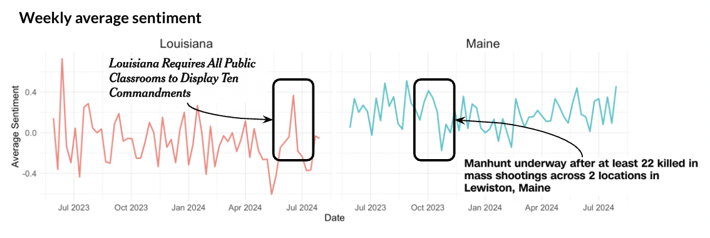
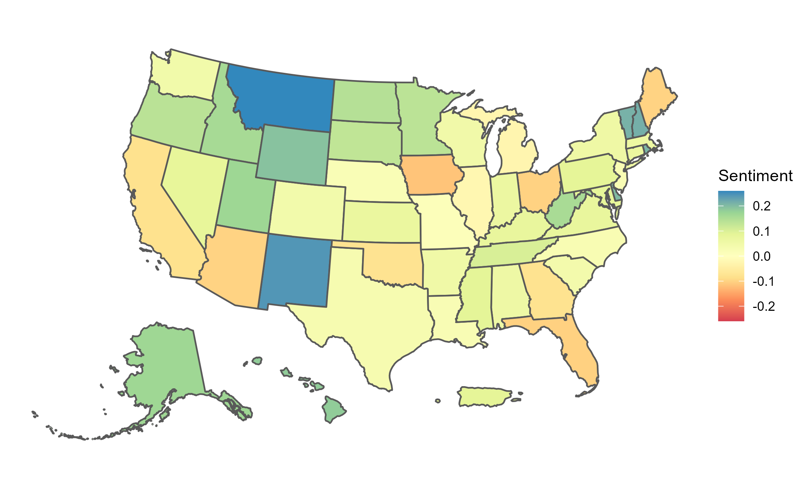
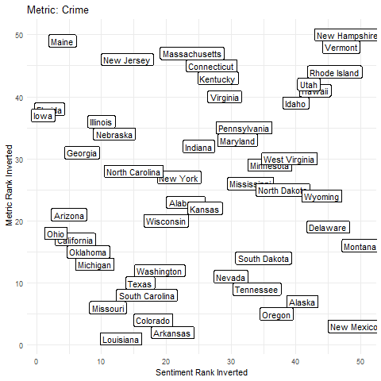
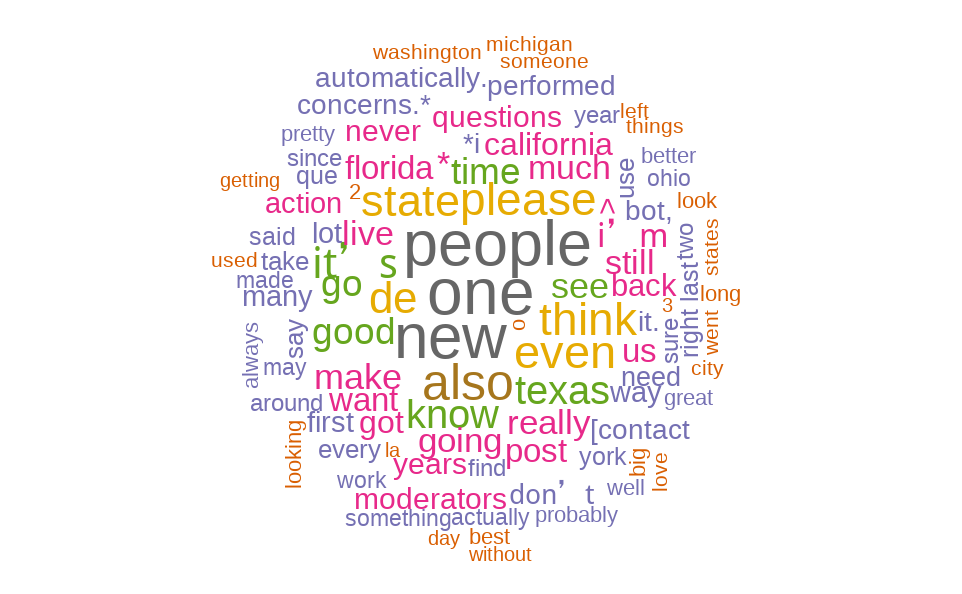

Natural Language Processing (NLP)
In this section, we dive into Natural Language Processing (NLP) to explore the themes and topics associated with different U.S. states on Reddit. Using techniques like PCA and TF-IDF, we can start identifying patterns and clustering states based on the keywords that frequently come up in discussions. This analysis gives us a deeper look at how people talk about each state, setting the stage for more detailed sentiment and topic analysis in the next milestones.
Sentiment Analysis Over Time
Overview
This analysis tracks the sentiment of Reddit discussions mentioning U.S. states over time. Sentiment scores, ranging from -1 (negative) to 1 (positive), are averaged for each state and visualized using a 14-day moving average. This approach highlights long-term sentiment trends while smoothing out short-term fluctuations.
Methodology
Data Preparation
- Sentiment Scores: Sentiment analysis was applied to Reddit posts, generating scores for each post mentioning a state.
- Date Aggregation: Posts were grouped by date, and average sentiment scores were calculated for each state.
- Smoothing: A 14-day rolling mean was applied to smooth the data and highlight long-term trends.
Visualization
- Each state is displayed in a separate panel, showing how sentiment changes over time.
- The y-axis represents the average sentiment score, ranging from -1 (negative sentiment) to 1 (positive sentiment).
Insights
Positive Sentiment
- States like Hawaii and Florida consistently exhibit positive sentiment, reflecting discussions related to travel and vacations.
- Seasonal spikes align with holidays and popular travel periods.
Neutral Sentiment
- States such as Colorado and Indiana show relatively stable and neutral sentiment trends, indicating balanced or less emotionally charged discussions.
Negative Sentiment
- States like California and Texas show occasional dips into negative sentiment, often correlating with controversial topics or political discussions.
Here we highlighted Louisiana and Maine because of notable sentiment shifts tied to significant events in each state. Let’s take a closer look: In Louisiana, a sharp rise in sentiment occurred in July 2024, coinciding with the state’s mandate requiring public classrooms to display the Ten Commandments. Meanwhile, in Maine, sentiment plummeted in October 2023 following mass shootings in Lewiston, where 22 people were killed, leading to a widespread manhunt. These examples illustrate how local events can strongly influence public sentiment over time.

Future Directions
- Event Overlay: Correlate sentiment trends with major events, such as elections, natural disasters, or cultural festivals.
- Topic Sentiment: Break down sentiment trends by topic (e.g., politics, tourism) for more nuanced insights.
- Subreddit Analysis: Examine how sentiment trends differ across various Reddit communities.
State Level Sentiment from Overall Mentions
With our dataset of all the comments that mentioned a full state name, we calculated a state-level average to generate the full rankings of all the states and territories. This analysis was performed using the Hugging Face twitter-dl sentiment analysis model and processed in a Spark job. Below is the total ranking of all the states and territories:

At the very top we have a few territories, American Samoaa and the Virgin Islands, which have high scores but are also not mentioned as often as the the states which leads to their ranks being not as significant. Same with DC, since we had to use the full names DC was mentioned the second to least and it seems that if people are writing out the full name of the city then they are fairly unhappy with it.
Otherwise, Montana and New Mexico were some of the more popular states with Ohio, Florida, and Iowa being some of the least popular. Too look at the states more generally though lets visualize the whole country:

We can see here the more popular states from the less popular ones although the sentiment tended to swing positive, meaning that states were not seen very negatively in the aggregate. A few do stand out though, the ones mentioned as well as California, Maine, and even Arizona don’t seem to have the best impressions. There are not a ton of regional blocks, most states seem to have a varying opinions rather than being grouped by location.
With this sentiment average and ranking we decided to compare to the US News & World Report rankings which had an aggregate score and subgroups which the states were ranked by. We wanted to see if the sentiment that we found had any interaction with those results and if so which and how. We did compare them all together but it ended up looking like alot of noise. Why don’t you see for yourself:
Sentiment Matrix by Subreddit
Overview
This sentiment matrix visualizes how Reddit discussions about U.S. states vary across different subreddits. Each cell represents the sentiment score for a particular state mentioned within a specific subreddit, with sentiment scores ranging from -1 (negative) to 1 (positive).
Key Insights
- Subreddit Diversity: States like California and Texas exhibit diverse sentiment across subreddits, reflecting the variety of topics and emotional tones associated with these states.
- Consistent Sentiment: Smaller states such as Wyoming show more uniform sentiment across subreddits, indicating focused or limited discussions.
- Polarized Discussions: Subreddits addressing politically or culturally charged states often display strong variations in sentiment, highlighting their contentious nature.
- Regional Overlaps: States in the same geographic region (e.g., southern or northeastern states) may share sentiment trends across certain subreddits, possibly due to shared cultural or regional topics.
Methodology
- Sentiment Scoring: Sentiment was calculated for each Reddit post mentioning a state using an NLP sentiment analysis model. Scores were aggregated at the subreddit level for each state.
- Data Normalization: Scores were rounded and normalized for clarity in the visualization.
- Visualization: A heatmap was created to display sentiment scores, with a diverging color scale to indicate positive, neutral, and negative sentiment.
Next Steps
- Deep Dive into Subreddits: Investigate specific subreddits (e.g., politics, travel) to understand the drivers of sentiment for states like California and Florida.
- Temporal Analysis: Explore how sentiment across subreddits evolves over time, particularly for states with highly polarized discussions.
- Topic Alignment: Combine this analysis with topic modeling to identify dominant themes driving sentiment variations within subreddits.

Across all categories there did not seem to be any relationship between the sentiment average of a state and its ranking. This leads us to believe that the sentiment we are capturing is more around the vibes and feelings of a state which are more cultural and perspective driven than practical.
Overall, we were able to look at a broad range of sentiment information around the states and found that these rankings were not tied to reality and thus may be more likely to shift to culutral rather than practical intervention.
Word Frequency from Overall Mentions
In addition to looking at sentiment we wanted to look at word importance and hopefully importance by state. In order to do this we first attempted to use a TF-IDF model to ranking the different documents based on scores around subjects. While we were able to fit the model, we were unable to pull out relevant insights on an aggregate state by state level. In leiu of this though we went with the TF aspect of the model and compared those values. The wordcloud of the top 100 words can be seen below:

The top 5 words were one, people, new, also, and even in that order. We did remove stop words as a part of the process using pyspark’s StopWordsRemover() but most of what was left still wasn’t incredibly interesting and relevant. You can see a few states did have higher mentions like Texas, Florida, and California which all made it into the top 30. We did run this on state level subsets of the data but we ended up getting one as the topword for all of them and other familiar words to the overall list. We think that this is due to the size of the data and the differences between the values being too big for subsets to change it.
Conclusion
In this section, we demonstrated that sentiment can be pulled from reddit discussions to evaluate public opinions about states. This is evident given the drastic changes in sentiment that occurred in states like Maine and Louisiana during national, consuming news stories that drove discourse. Potential biases were more pronounced in this analysis, where we saw a territory like Washington DC exhibit extreme negative sentiment. Perhaps if other states were not contaminated with views and opinions about topics such as sports teams, a more accurate score of sentiment could be calculated. Finally, the sentiment being evaluated from these online discussions did not align with more traditional sources of state perception like state rankings on education, health, or economic performance. The sentiment of states in these posts more likely reflected topics like news, local culture, or the stochastic and ever-changing nature of public opinion. For future work, the sentiment of a state’s news could be compared to the sentiment of a state’s Reddit posts to examine similarities. In summary, while the sentiment we capture from Reddit is not traditional, it reflects a complicated phenomenon that could be useful in teasing out public opinion around marketing campaigns, state-level policy changes, or national events/news stories.